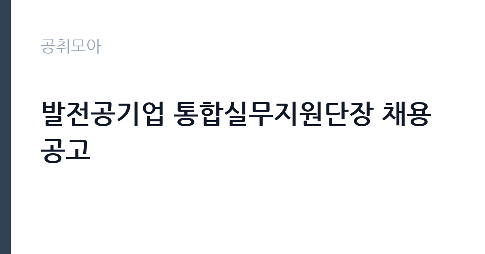

[공공기관] 발전공기업 통합실무지원단장 채용공고
한국남동발전㈜ · 서울 · 마감 2026-10-08 (D-15) · 출처 나라일터

한눈에 보는 모집 조건
| 기관 | 한국남동발전㈜ |
|---|---|
| 공고명 | 발전공기업 통합실무지원단장 채용공고 |
| 고용형태 | 정규직 |
| 근무지 | 서울 |
| 게시일 | 2026-09-23 |
| 마감일 | 2026-10-08 (D-15) |
지원자격, 이렇게 읽으세요
- 기간제근로자(처장급) 1명
- 접수 ~2026-10-08 마감
- 세부 조건은 원문 공고문 확인
지원 자격의 문턱이 매우 구체적입니다. 접수마감일 기준 최근 5년 이내에 발전 5사에서 상임이사 이상으로 재직한 경력이 있고 접수마감일까지 퇴직한 분만 지원할 수 있습니다. 경력 인정기간은 2021년 10월 9일부터 2026년 10월 8일까지입니다. 연령 제한은 없으며 병역의무 불이행 사실이 없고 국가공무원법 결격사유에 해당하지 않아야 합니다.
이 공고의 포인트
이 공고는 사실상 발전 5사 전직 임원을 대상으로 한 자리입니다. 상임이사 이상 경력이라는 조건이 일반 지원자를 원천적으로 가르는 만큼 해당 경력이 있는 분께는 경쟁자가 극히 적은 기회입니다. 서류심사는 5배수, 면접은 2배수로 선발하며 업무실적서와 직무수행계획서가 각각 50점씩 반영됩니다. 발전산업 통합이라는 역사적 과제의 실무를 맡는다는 상징성도 있습니다.
전형은 어떻게 진행되나
1차 서류심사에서 업무실적서 50점과 직무수행계획서 50점으로 5배수를 선발하고 2차 종합면접 100점으로 2배수를 선발합니다. 이후 합격예정자 1배수를 통합준비위원장이 선발하며 신체검사와 신원조사 적격자가 최종합격합니다. 취업지원대상자는 동점자 처리기준에서 우대합니다. 세부 사항은 공고문 참조가 원칙입니다.
원문에서 확인한 전형 방식
1. 선발분야 : 통합실무지원단장[기간제근로자(처장급)] 2. 채용기간 : 9. 23.(수) ~ 10. 8.(목) ※ 입사지원서 접수 : 9. 30.(수) ~ 10. 8.(목) 3. 지원자격 ○ 연령 : 제한없음 ○ 병역 : 병역법 제76조에서 정한 병역의무 불이행 사실이 없는 자 ○ 경력 : 지원서 접수마감일 기준 최근 5년 이내 발전5사(한국남동발전, 한국남부발전, 한국동서발전, 한국서부발전, 한국중부발전)에서 상임이사 이상으로 재직한 경력이 있고 접수마감일까지 퇴직한 자 ※ 재직 경력 인정기간 : 2021.10.9. ~ 2026.10.8. ○ 기타 - 국가공무원법 제33조 결격사유에 해당하지 않는 자 - 입사일로부터 정상근무가 가능한 자 4. 결격사유 : 국가공무원법 제33조 결격사유에 해당하는 자 5. 선발방법 ○ 1차(서류) : 5배수 선발 - 업무실적서(50점) + 직무수행계획서(50점) ○ 2차(면접) : 2배수 선발 - 종합면접(100점) ○ 합격예정자 : 1배수 선발 - 통합준비위원장이 선발 ○ 최종합격 : 신체검사, 신원조사 등 결과 적격자 ※ 기타 세부사항은 공고문 참조 6. 우대내용 : 취업지원대상자 동점자 처리기준 우대 등
이런 분께 추천해요
- 발전 5사에서 상임이사 이상으로 재직하고 퇴직한 경력이 있는 분께 적합합니다.
- 발전산업 구조와 통합 현안에 대한 실무 지식을 가진 전직 임원께 추천합니다.
- 단기간에 통합 준비 실무를 이끌 실행력이 있는 분께 어울립니다.
지원 전 체크리스트
- 최근 5년 내 발전 5사 상임이사 이상 재직과 퇴직 시점을 확인했습니다.
- 업무실적서와 직무수행계획서 작성 요령을 원문에서 확인했습니다.
- 접수기간이 9월 30일부터 10월 8일까지임을 확인했습니다.
- 결격사유와 우대사항을 원문에서 확인했습니다.
모집 일정과 제출 타이밍
채용기간 공고는 9월 23일부터이나 실제 입사지원서 접수는 9월 30일부터 10월 8일까지입니다. 접수 창구가 일주일 남짓으로 짧으니 업무실적서와 직무수행계획서를 미리 완성해 두시기 바랍니다. 서류와 면접이 차례로 진행되므로 10월 중순 이후 일정을 비워두시는 것이 좋습니다.
직무 이해하기: 공공기관
통합실무지원단장은 발전 5사 통합 준비를 위한 실무지원 조직의 장으로서 통합 관련 자료 분석과 이해관계자 협의, 준비위원회 지원 업무를 총괄합니다. 발전산업 구조에 대한 깊은 이해와 임원급 조정 능력이 요구됩니다. 기간제 처장급 신분으로 통합 논의라는 한시적 과제에 집중하는 역할입니다.
자기소개서 작성 팁
업무실적서에는 임원 재직 시절의 경영 성과와 구조개혁, 노사 협의 경험을 수치와 함께 정리하시기 바랍니다. 직무수행계획서에서는 통합 준비 단계별 실행 방안과 리스크 관리, 이해관계자 소통 계획을 구체적으로 제시하시는 것이 좋습니다. 선언적 문장보다는 실행 가능한 로드맵이 평가를 가릅니다.
면접 준비 포인트
종합면접에서는 통합에 대한 소신과 추진 전략을 집중적으로 물을 것으로 예상됩니다. 발전산업 현안과 통합의 명분, 우려에 대한 본인의 입장을 논리적으로 정리해 두시기 바랍니다. 임원급 면접인 만큼 조직을 이끈 경험과 위기 대응 사례를 묻는 질문에도 대비하시기 바랍니다.
급여·근무조건 읽는 법
구체적인 보수 금액은 공고문에 따른 것으로 원문에서 확인하시기 바랍니다. 참고 맥락으로 남동발전 직원 평균보수는 2024년 기준 약 9,648만원 수준이며 상임기관장 평균연봉은 약 2억 1,164만원 수준으로 공개되어 있습니다. 출처는 전력통계 기반 집계이며 이번 기간제 처장급 단장직의 보수와 직접 연결되는 수치는 아니므로 원문 확인이 필요합니다.
자주 묻는 질문
- 고용형태는 어떻게 되나요?
기간제근로자 처장급으로 채용하는 자리입니다. 정규직 전환을 전제로 한 공고가 아니므로 근로계약 조건을 원문에서 확인하시기 바랍니다. - 지원 자격의 핵심은 무엇인가요?
최근 5년 이내 발전 5사 상임이사 이상 재직 후 퇴직한 경력이 핵심입니다. 인정기간은 2021년 10월 9일부터 2026년 10월 8일까지이니 원문에서 확인하시기 바랍니다. - 다른 발전사 공고와 중복 지원할 수 있나요?
남동발전과 남부발전, 동서발전, 서부발전, 중부발전이 같은 내용으로 각각 모집합니다. 중복 지원 가능 여부는 각 공고문에서 확인하시기 바랍니다.
함께 보면 좋은 공고
[공공기관] (재)인천광역시부평구문화재단 대표이사 채용 공고 — 마감 2026-10-13[공공기관] [설악산] 설악산국립공원 기간제 직원[환경관리(한시인력)] 채용 공고 — 마감 2026-10-01[공공기관] 2026년도 한국등산트레킹지원센터 기간제근로자(보훈 제한경쟁) 채용 재공고 — 마감 2026-10-07출처: 나라일터 공개정보를 바탕으로 공취모아가 정리한 안내글입니다. 모집 조건·일정은 변경될 수 있으니 지원 전 반드시 원문 공고문을 확인하세요. 본 글은 정보 제공용이며 합격을 보장하지 않습니다.